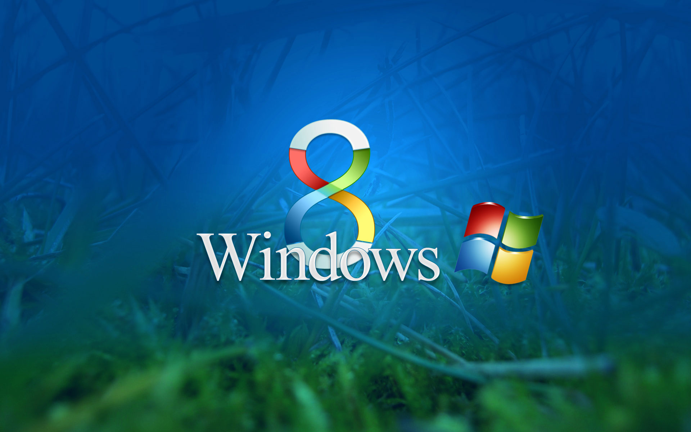

Perchè passare a W8

| Motivo |
Descrizione |
|
1. Avvio più veloce |
Il tempo richiesto per l’avvio di una macchina è irrilevante; i tempi di avvio non migliorano le prestazioni generali. Ma volendo usare un computer e dover aspettare un intero minuto prima che sia operativo, è davvero una cosa insopportabile.
In Windows 8, gli sviluppatori hanno creato una modalità ibrida di arresto che si traduce in tempi di avvio più veloci. Questa nuova modalità combina la chiusura tradizionale che consente di avviare una nuova sessione per un nuovo utente senza la necessità di distruggerecompletamente e inizializzare un sistema da 0% a 100%. |
| 2. Task Manager |
Il task manager di Windows 8 è più veloce e chiude i programmi in maniera efficace. Esso fornisce anche informazioni relative all’utilizzo della CPU, della memoria RAM e così via, portando un miglioramento nelle prestazioni del PC. |
| 3. Esplora risorse di Windows |
Per l’utente medio, le scorciatoie da tastiera non sono un’opzione sempre fattibile, per questo ci si può affidare alla nuova opzione di Espora Risorse di Windows, che facilita il compito di ricerca. |
| 4. Maggiore sicurezza |
Se ci pensate i miglioramenti nel campo della sicurezza da Windows 3.1 a Windows 95 a Windows XP e oltre, vedrete che la protezione personale ha percorso una lunga strada. È difficile credere che siamo più al sicuro oggi di quanto eravamo allora, in particolare con tutti i trojan, worm e malware che circolano, ma abbiamo davvero fatto dei passi da giganti negli ultimi decenni. |
| 5. Aggiorna e ripristino |
Uno dei più grandi fastidi di Windows è la difficoltà di reinstallazione e di riavvio del sistema operativo. Con Windows 8, il tempo di restore si abbassa drasticamente. La nuova funzionalità si chiama Refresh e agisce come un parziale reinstallazione. In sostanza, un aggiornamento salverà l’immagine dei moduli del computer, reinstallerà il kernel di Windows e reinserirà le altre componenti del sistema. Questo significa che non si perdono applicazioni o dati utente. Se volete proprio un AVVIO completo, allora si dovrà utilizzare la funzionalità Ripristino. |